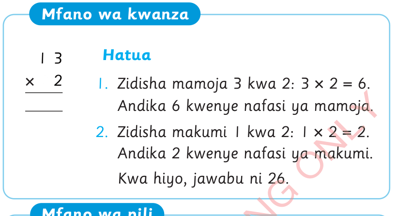
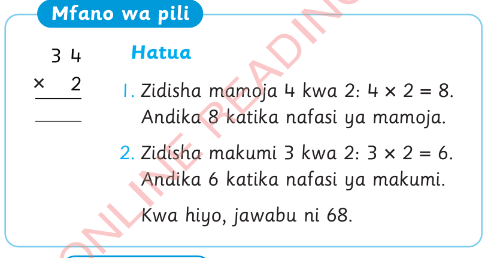

Mfano wa kwanza
13 × 2
Hatua
1.Zidisha mamoja 3 kwa 2: 3 × 2 = 6. Andika 6 kwenye nafasi ya mamoja.
2.Zidisha makumi 1 kwa 2: 1 × 2 = 2. Andika 2 kwenye nafasi ya makumi.
Kwa hiyo, jawabu ni 26.

Mfano wa pili
34 × 2
Hatua
1.Zidisha mamoja 4 kwa 2: 4 × 2 = 8. Andika 8 katika nafasi ya mamoja.
2.Zidisha makumi 3 kwa 2: 3 × 2 = 6. Andika 6 katika nafasi ya makumi.
Kwa hiyo, jawabu ni 68.